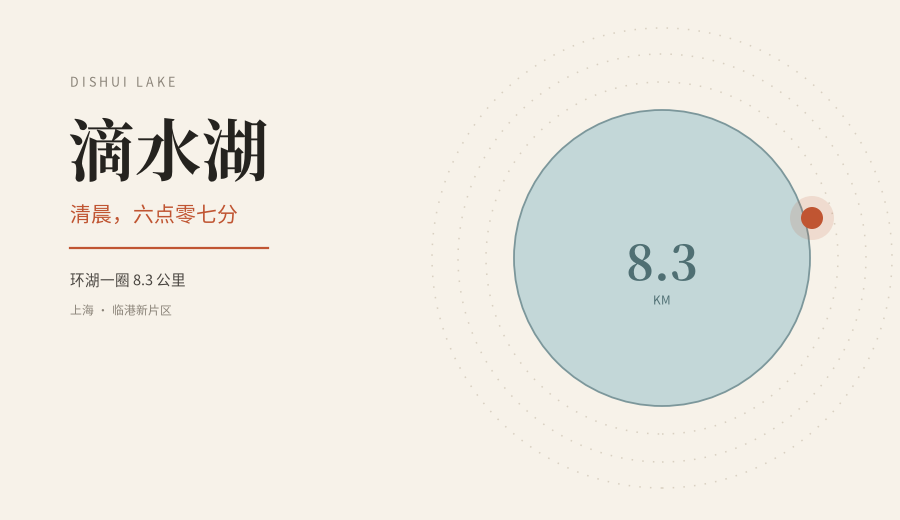
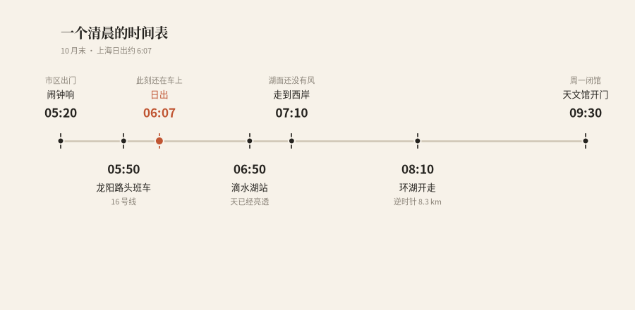
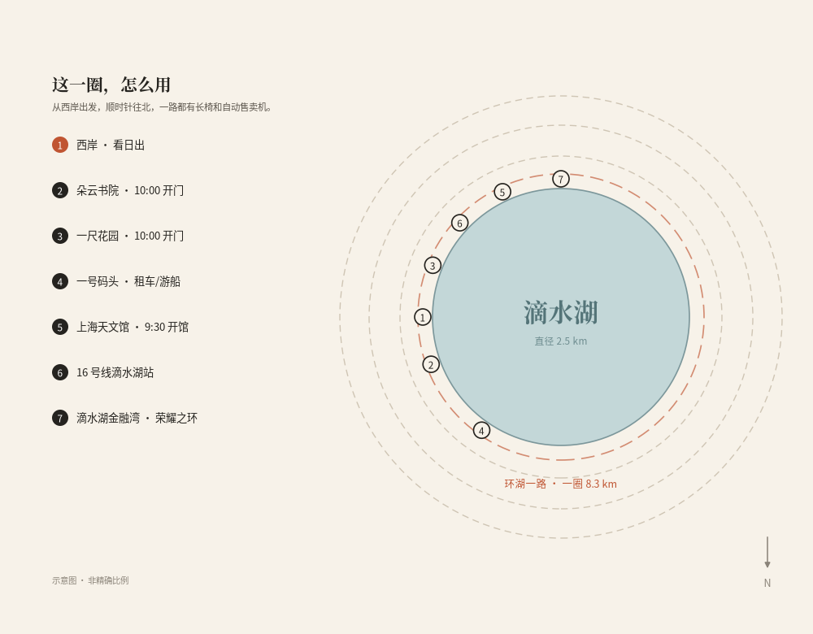

上海 · 临港新片区 · 环湖一圈 8.3 公里
5:50 从龙阳路出发，6:50 到湖边，太阳 6:07 就升完了。写给想在一个空湖边上待一上午的人——交通、路线、早饭、九点半之后的去处，一次说清楚。
周六，闹钟定在五点二十。
出门时天还黑着，小区门口只有垃圾车在响。从浦西去滴水湖，等于横穿整个上海。
16 号线龙阳路站，5:50 的头班车。
车厢里坐得挺满。一半人闭眼补觉，一半人穿跑鞋、背越野包，脚边立着登山杖。邻座大哥拎个保温杯，问我：去看日出啊？我说是。他笑了一下：那你起晚了。
我当时没懂。一个小时后，站在滴水湖站的出口，我懂了。
— 01 —
头班车，赶不上日出
10 月末，上海的日出是 6:07。
16 号线从龙阳路到滴水湖，全程五十多分钟。头班车 5:50 发，出站已经 6:45。太阳早就升完了，天光铺在湖面上，亮得晃眼。
所以，想靠地铁去滴水湖看日出，这条路本身就不成立。
真要看，两个办法：前一晚住临港，或者自驾。临港再往东，南汇嘴观海公园是上海最早见到日出的地方，从滴水湖开过去二十来分钟。
不过，如果你不执着那几分钟，头班车反而是最好的选择。6:50 的滴水湖，几乎没有人。
滴水湖的清晨，不靠一场日出撑场面。

一个早上，五个小时，从市区到湖边
— 02 —
六点五十的湖，是另一个上海
从滴水湖站往湖边走的这十分钟，风先到，水汽后到。
西岸有个大爷在钓鱼，鱼竿架在栏杆上，人坐在小马扎上刷手机。跑团五六个人，短裤，从身边过去，脚步声在空地上特别清楚。环卫工人扫落叶，扫帚刮过地面的声音，一阵一阵。
湖是正圆，直径 2.5 公里。对岸的房子看着很近，走起来不是。
环湖景观带有三条道：最靠水的是滨湖步道，中间是漫步道，外面是跑步道，地面颜色不一样，跟着颜色走就不会串道。
市区六点半的地铁站是打仗，滴水湖六点半的湖边是散场。同一个人，站在两个地方，呼吸都不一样。
— 03 —
8.3 公里，别一上来就想走完
滴水湖周长 8.3 公里，面积 5.56 平方公里。数字不大，走起来是另一回事。
因为湖是正圆，没有近路。走到一半想撤，要么原路返回，要么硬着头皮走完。
第一次来，建议只走西岸到北岸这一段，五公里左右，景最密：西岸看水，北岸看楼，金融湾那片新楼还在往上长。

西岸出发，顺时针往北，一圈刚好把湖看完
| 怎么走 | 一圈用时 | 适合谁 |
| 跑步 | 45–55 分钟 | 想出汗、赶时间 |
| 步行 | 两小时上下 | 拍照、带娃、不赶 |
| 骑行 | 30–40 分钟 | 不想走、想看全 |
按匀速估的，停下来拍照另算
跑的人注意东岸。那段风最硬，逆风的时候会怀疑人生，帽子记得压紧。
骑的人去一号码头。休闲自行车按车型 20、40、60 块一辆，以现场为准；共享单车也能骑，环湖路没有坡，很顺。
一个正圆形的湖，最大的好处是没有死角，最大的坏处是你永远知道还剩多少。
— 04 —
早饭，是这趟唯一的坑
湖边那些好看的店，基本都要十点才开。
朵云书院·滴水湖店，在港城广场五到七楼，10:00–20:00。一尺花园滴水湖西岸店，环湖西一路 858 号，也是 10:00–20:00。
所以早上七点半，湖边能买到热东西的地方，不多。
我的办法是出站先在便利店解决：饭团、茶叶蛋、一杯烫手的豆浆。坐在湖边长椅上吃，风把塑料袋吹得哗哗响，得用手压着。
在滴水湖，早上最靠谱的一顿，是便利店那杯热豆浆。
— 05 —
九点半，湖醒了
九点半，天文馆开门。临港大道 380 号，周一闭馆，实名预约，周末的票要提前抢。
十点，朵云书院开门。二十米高的书山，五到七楼，靠窗的位置能看见整片湖。手机拍照可以，专业相机要先问一声。
差不多同一时间，一尺花园也开了。玻璃房、绿植、书，适合坐着发呆。
北岸金融湾的“荣耀之环”已经建成，直径 153 米。官方说今年开放，但能不能上去、怎么上去，去之前最好查一下最新消息，别白跑。
我那天没进去。在湖边坐到十点，太阳升高，湖面从灰蓝变成白色，风也起来了。人一多，湖就不是早上那个湖了。
回程的 16 号线，车厢里全是刚逛完天文馆的小孩。我靠着车窗睡了一觉，醒来已经到龙阳路。
如果你也去过滴水湖的清晨，评论区聊聊：你是绕湖走完 8.3 公里那一派，还是找张长椅坐着不动那一派？
我两种都试过。说实话，坐着那派，比较省腿。
实 用 信 息
交通 16 号线龙阳路 5:50 首班，滴水湖 6:00 首班返程，末班 22:30。
日出 10 月末约 6:07，出发前查当天时间，阴天就别硬等。
装备 防风外套、帽子。湖边风大，体感比市区凉不少。
补给 地铁站便利店、环湖自动售卖机；湖边餐厅多十点后营业。
#滴水湖 #临港新片区 #上海周末